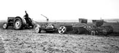

|
|

|

|

|
During the 1920s, the focus of the Canadian government changed
from the promotion of wheat production and the deterrent of beef
cattle production, to the encouragement of mixed farming enterprises.
Agricultural operations included specialization in poultry raising,
dairy production and beekeeping.
|

At this time changes were occurring to enable more efficient sowing
and harvesting of wheat crops. Gasoline tractors were being manufactured
to take the place of horses in the field. One way seeders and
combines were used in Saskatchewan. These
innovations lessened the demand for manual labourers on the farm
and started a trend toward larger farm units. |
The 1920s also saw the growth of secondary industries such as
packing houses, cold storage plants, canneries and creameries.
But, it was also the decade that farmers saw a decline in income
when poor grades, grasshoppers and rust took their toll on crops.
However, these problems did not prevent the growth of the Saskatchewan
agricultural industry. Credit was easily obtained and some farmers
went deeply into debt to build up their farming operations.
By the end of the 1920s a second stage of prairie
history was completed and a major one -- crop wheat economy
with a minor beef crop -- had spawned a highly individualistic and
flourishing farm civilization.
|
|
|
|
|